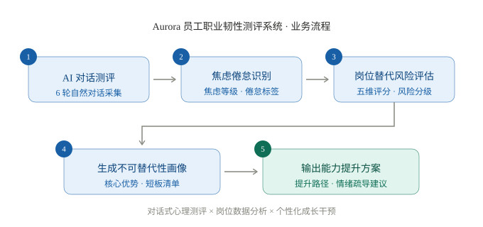
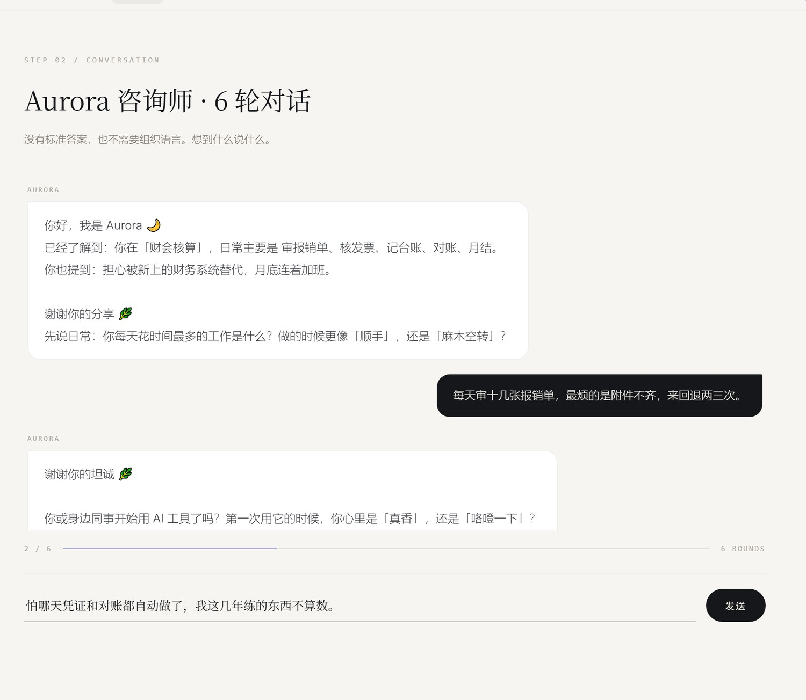
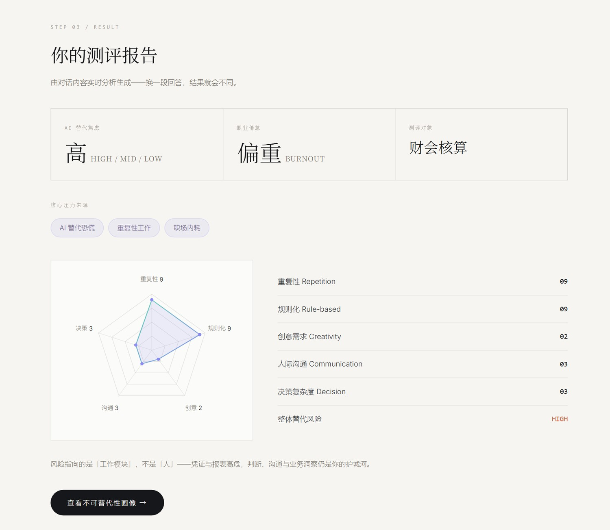
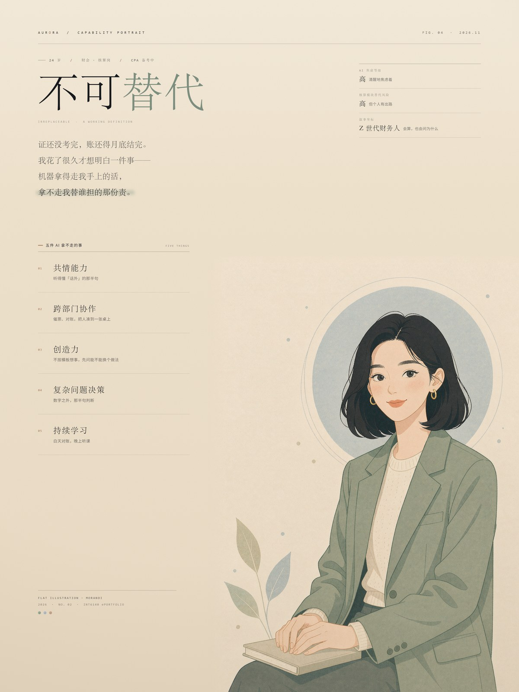

个人职业画像与未来工作哲学
我 24 岁，在财会核算岗，从毕业到现在没换过行。有点巧的是，我做财务的这几年，正好是身边所有人开始谈 AI 的这几年。前辈手里有十几年的经验垫着，我资历还浅，工具已经换了两三轮。这行我打算继续做，只是做法得跟着换。
我的日常是审报销单、核发票、记台账、对账、月结。加班不算新闻，真让我睡不着的其实是另一件事：这些活如果哪天不需要人了，我算什么。这份作品集就是从这个问题开始的，算不上什么宏大的研究计划。
转折来得很普通，就是一个下午的事。公司把发票查验改成系统自动识别，原本两个人要花一周逐张核对的活，压成了半天加一次抽查。那天我把省下来的时间用去追一张连续三个月挂账的应收，最后查出来是业务部门重复开票。说不上顿悟，就是那天我第一次觉得：我干的这摊活里，有一部分确实是机器干不了的。
1.1我的未来工作哲学
我现在对 AI 的看法很朴素：它像一副外骨骼，不替人走路，但能让人多扛一点。会不会被淘汰，我觉得不取决于你会不会用 AI，而取决于你手上还剩多少 AI 做不了的事。
顺着这个想法往下走，就有了这套作品集的命题，说起来有点绕：如果焦虑是 AI 带来的，能不能让 AI 自己来拆？后面的 Aurora 系统，就是我拿这个问题做的一次实验。
我在意「被技术甩下的人」，是因为我身边就有。我妈在一家小厂做了十几年出纳，去年厂里换了新财务系统，她学了三个月还是不敢自己点「结账」，每次都要等年轻人回来帮忙。我教她的时候特别难受——不是她不够努力，是没有人给她设计一条能走上去的台阶。我做 Aurora，一半是给自己，一半是想证明一件事：台阶是可以被设计出来的。
1.2我的任务清单：把岗位拆成十五项
替代以任务为单位发生，所以我先把自己手上的活一项一项列出来。不写岗位说明书上的套话，只写我实际在做、能被观察到的动作：
判断栏的四个标签是我自己的分类口径：AI 可代做指规则明确、出错后还能事后查出来的环节；人机协作指 AI 出初稿、我签字定稿；须人判断指要拿准则与业务实质去权衡的；人担责指一旦出问题由我负责、转不给系统。清单依据 2026 年 10 月本人岗位的实际分工整理。
| No. | 工作单元 | 频率 | 我的判断 |
|---|---|---|---|
| 01 | 审核费用报销单据：单据完整性、审批流是否齐全 | 每日 | AI 初筛，人复核 |
| 02 | 核验发票与附件合规：抬头、税号、金额、真伪 | 每日 | AI 可代做 |
| 03 | 判断报销事项是否合乎制度与标准（超标、跨期、科目） | 每日 | 须人判断 |
| 04 | 退回单据，并向报销人说明补正要求 | 每日 | 人为主 |
| 05 | 按月整理单据、排序装订 | 每月 | AI 可代做 |
| 06 | 编制记账凭证、编号归档 | 每月 | 人机协作 |
| 07 | 登记现金日记账、日终盘点 | 每日 | AI 可代做 |
| 08 | 登记银行流水台账、逐笔勾对 | 每日 | AI 可代做 |
| 09 | 月末银行对账、编制余额调节表 | 每月 | 人机协作 |
| 10 | 追查未达账项与长期挂账 | 每月 | 须人判断 |
| 11 | 财务合同归集保管、借阅登记 | 不定期 | 人机协作 |
| 12 | 票据领用、核销与定期盘点 | 不定期 | 人担责 |
| 13 | 用 AI 提取单据信息，生成结构化台账 | 试行中 | 我在做 |
| 14 | 用 AI 比对台账与流水，定位差异条目 | 试行中 | 我在做 |
| 15 | 用 AI 清理重复文本（合同摘要、备注说明） | 试行中 | 我在做 |
15 项中：AI 可独立完成或初筛 5 项 · 人机协作 3 项 · 须人判断或担责 4 项 · 我正在用 AI 试行的 3 项
列完这张表，2.2 的分数就不像凭感觉了：15 项里有 8 项落在「重复＋规则」区间，按工时估算接近我全部工作量的七成，正好对应重复性 9 与规则化 9；而第 3、4、10、12 项——制度判断、向人解释、追查未达账项、票据担责——没有一项能只把材料丢给模型就算完，也就对应了决策复杂度 3 与人际沟通 3。清单是打分的底稿，也是 4.3 里「该补哪块」的原始依据。
前沿科技深度剖析：智能体工作流重塑财会行业
2.1技术界定：从「AI 工具」到「智能体工作流」
本作品集聚焦的前沿科技是智能体工作流（Agentic AI Workflow）：它不是单点问答式的生成式 AI，而是能够拆解目标、调用工具、多步执行并自我校验的自主数字员工——例如自动完成「取数 → 记账 → 对账 → 出报表 → 生成分析」全链条的财务智能体。它与 RPA 的本质区别在于：RPA 模仿动作，智能体理解任务。
2.2对财会行业工作流程的重塑
我以自身岗位为样本，从五个维度对核算工作进行替代风险评估（0–10 分）：
| Dimension | Score | 判断依据 |
|---|---|---|
| 重复性 | 09 | 凭证、月结报表高度周期化 |
| 规则化 | 09 | 会计准则明确，判断空间小 |
| 创意需求 | 02 | 几乎无创造性内容 |
| 人际沟通 | 03 | 催票对账等浅层协调 |
| 决策复杂度 | 03 | 重大决策由管理层承担 |
评估显示：凭证录入、自动对账、报表编制、发票验真、税费申报、月度结账六大模块均处高替代射程；而异常业务合规判断、跨部门协调、经营分析洞察、审计稽查应对四大模块难以被替代。这印证了关键结论：AI 替代的是「工作模块」而非「职业人格」——被重塑的不是会计这个职业，而是它的能力图谱。
分数不是测量，是判断。我先给自己定了一把统一刻度，再逐项对照手上的活，才得出上面五个数。需要说明的是，这是自评而非测量：同一岗位换个人打，分差可能有一两分；它的价值不在精确，而在于把「我会不会被取代」这句模糊的恐惧，拆成五个可以争论、也可以补的坐标。

2.3雇佣形态演变：共享中心与「离岸外包 2.0」
智能体工作流正在压缩财会雇佣金字塔的底层：企业共享服务中心（SSC）将核算岗集中化，为自动化提供规模化场景；当智能体可以全天候执行核算流程，「离岸外包」便从「把工作外包给更便宜的地区」，演变为「把工作外包给更便宜的智能体」。本地基础核算岗位因此承受全球化与智能化的双重挤压，企业转而争夺「懂业务、会驾驭 AI」的财务分析与 BP 人才。
这不是推演。德勤的财务机器人早就在凭证与对账环节跑批，普华永道的 Halo、毕马威的 Clara 把审计抽样换成了全量数据检验，国内用友 BIP、金蝶苍穹也把「智能记账—自动对账—报表生成」做成了标准模块。它们的切入口高度一致：几乎都落在我打分最高的那几个模块上——重复、规则、可核验。反过来，没有一家产品敢承诺替客户判断「这笔异常费用该不该资本化」，因为那要签字，要担责。
政策层面甚至跑在个体感受前面。财政部《会计信息化发展规划（2021—2025 年）》在 2021 年底已把电子凭证数据标准、审计数字化转型、财务报表数据「标准化、结构化、单一来源」列为核心任务（财政部，2021）。当标准本身开始为机器读取而设计，核算岗的工作形态就不再只是「用软件」，而是「被系统吸收」。
2.4人口结构视角：为什么焦虑集中在 Z 世代
Z 世代（1995–2010 年生）是第一代职业发展轨迹与生成式 AI 能力曲线完全重叠的人群：当资深员工拥有「前 AI 时代」积累的权威护城河时，Z 世代正处于「技能尚在建立、护城河尚未成形」的阶段——替代风险对他们的职业预期冲击最大，也最具代际普遍性。这一「入行即遭遇技术奇点」的结构性处境，正是本作品集将干预对象锁定为 Z 世代的原因。
这也不只是我的体感。Brougham 与 Haar（2018）用 STARA 量表测了 120 名员工，30 岁以下组的替代焦虑均值最高（1.9，50 岁以上组为 1.2，31–50 岁组为 1.6）；且焦虑越高，组织承诺与职业满意度越低，离职意向、犬儒主义与抑郁倾向越高。焦虑不只是情绪，它会变成可测量的组织成本——这正是我认为它值得被设计、而不只是被安慰的理由。
另一面是技能需求在挪位：世界经济论坛《未来就业报告 2025》把 AI 与大数据列为未来五年增长最快的技能需求（World Economic Forum, 2025）。这既是压力，也是方向——被拿走的是操作，被要价的是判断。
未来工作场所与员工福祉创新设计：Aurora 系统
3.1设计思维全过程
6 轮对话式测评，替代冰冷问卷，采集真实情绪语料
痛点：AI 替代焦虑 × 职业倦怠 × 精神内耗的三重叠加
命题转换：与其「科普 AI 不可怕」，不如让 AI 亲自给出个性化证据
可交互网页：对话测评 → 风险报告 → 能力画像 → 情绪疏导
邀真实用户现场体验，结果随输入动态变化
3.2系统成果：一个「会共情的 AI 职业韧性教练」
这里有一个理论支点。Tarafdar 等（2019）把技术压力拆成两支：同一项技术既可能造成 techno-distress（耗竭、焦虑、被支配感），也可能产生 techno-eustress（被赋能、长本事、更投入），分岔点不在技术本身，在设计。这几乎就是整个系统的假设：AI 引发了焦虑，但如果把它做成「给我证据」的工具，同一项技术就转向了另一支。
Aurora 系统包含五大闭环功能：AI 对话测评（识别焦虑等级与倦怠标签）→ 岗位替代风险评估（五维雷达图）→ 个人不可替代性画像（优势 / 短板 / 路径）→ 情绪疏导对话（焦虑暂停法、下班仪式等可落地方法）→ 数据导出（支持组织级岗位风险分析）。两个入口都可以在答辩现场直接点开：



3.3从个人工具到组织机制：落地构想
每月一次部门级 AI 工具共创会，让员工从「被替代者」转为「驾驭者」，重建掌控感与团队归属感。
将 Aurora 测评纳入员工关怀体系（匿名、自愿），HR 据此前置干预，而非事后补救。
每个团队设一名 AI 转型大使，把替代焦虑转化为身份激励。
换工作要求—资源模型（Bakker & Demerouti, 2017）看，这三项并没有减少要求，而是增加资源：工坊给掌控感，档案给可见性，大使给身份。当岗位总量与薪酬结构这些「要求」个人改不动时，资源决定人还能撑多久、以及撑得有没有尊严。
「别怕」这套话，员工其实不太吃。他们要的是能对上自己处境的东西。所以 Aurora 不给结论，只给一张写着你自己数字的表——信不信，你自己看。Design Insight
我请了三位同学现场试。做 HR 的那位测完停了几秒，说：「你系统里那句『我不是害怕 AI 会写凭证』，说的就是我。」做运营的同学换成自己的岗位重测，焦虑等级从「高」掉到「中」，回头问我能不能给她们团队也用。第三次测试我才发现一个问题：有人一路点「下一步」，把测评当成问卷在赶——于是我把对话改成必须打字回答，答得太短还会追问一句。这一改，报告才真的做到因人而异。
3.4伦理与边界：这套系统不该做什么
Aurora 采集的是情绪语料，比成绩单更敏感，所以设计上先守三条：只问完成测评所必需的信息；默认匿名，报告只存在用户自己的浏览器里，不上传、不接入人力资源系统；用户可随时清空。自愿是底线，不是姿态——一旦变成强制，真话就消失了。
它也不是诊断工具。输出的是自评坐标，不是临床结论；若对话中出现持续失眠、自伤念头这类信号，系统只做一件事——停下来，给出学校辅导中心与员工援助计划（EAP）的转介信息，不试图治疗。同理，它绝不能被用于招聘、晋升或裁员评估：一旦如此，「安全的自我陈述」立刻变成「供词」，这是我最不愿见到的误用。
最后是能力边界。Aurora 改不了岗位总量与薪酬结构，它只能给个体一份在不确定中的行动能力；五维分数是自评而非测量，模型也会出错，必须由人复核。把边界写在明处，比假装它不存在更有说服力。
学期反思历程与职业行动路线图
4.1结构化反思：Gibbs 反思循环
本学期我以 Gibbs（1988）反思循环为框架，记录自己对「AI 与我的职业」的认知迭代：
| Stage | 我的反思要点 |
|---|---|
| 描述 Description | 学期初，公司开始试点智能报销与自动记账。我第一次看着系统十几秒生成一整个月的费用凭证；同一天，我加班到十点手工对账。回家的地铁上刷到「AI 将取代数百万会计」的推送，我把手机扣在腿上，很久没说话。 |
| 感受 Feelings | 不是愤怒，是失重。一半是「终于有人替我干这些破活了」的轻松，一半是「那我算什么」的恐慌。做 Aurora 时也有同样的矛盾：AI 十分钟做出了我原本要熬一晚的页面，我既兴奋，又有点心虚。 |
| 评价 Evaluation | 最好的体验，是同学现场测完说「你系统里那句话说的就是我」；最难的，是前几周读不进去理论，觉得全球化和人口结构离我的加班很远——直到我用它解释了自己的处境。 |
| 分析 Analysis | 三个转折。其一，「岗位」和「工作模块」是两回事：五维评分里重复性 9 分、决策 3 分，被替代的是模块，不是我。其二，我的焦虑有结构性来源：Z 世代职业锚定期与 AI 能力曲线完全重叠，共享中心与「离岸外包 2.0」又在压缩底层核算岗——不全是我不够努力。其三，情绪本身也可以是设计对象：CILO2 让我明白员工福祉不是福利，而是生产力的基础设施。Gibbs 逼我承认：我原先的恐惧里有一半是「想象中的替代」，我缺的是证据——而证据可以自己造出来。 |
| 结论 Conclusion | 职业韧性 = 专业判断 × 人际共情 × AI 驾驭力；焦虑的解药是具体的行动路径 |
| 行动 Action | 见下方 1–2 年路线图 |
4.2最深的一次转折
真正让我改变的，不是某节课，而是给自己的工作打分的那一刻。我一直以为「会计」是一个整体，要么被保留，要么被取代；可当我把它拆成五个维度、逐项打分，看到重复性 9 分、决策 3 分时，我第一次意识到：被 AI 拿走的是那些我本来也不喜欢的部分，而剩下的 3 分，恰恰是我一直没认真练的部分。那天我把原来的计划表划掉，改写成了「三个月内做出第一份经营分析」。恐惧还在，但它从一团雾变成了一个可以排期的事。
第一份经营分析交上去，主管翻到第三页停了一下，说了句「这部分以前没人写过」。就这一句，比任何鼓励都管用——它证明那 3 分不是天赋，是练得出来的。
4.3个人职业适应性战略路线图
| 阶段 | 目标 | 关键行动 |
|---|---|---|
| 短期 3–6 个月 | 把 AI 从威胁变武器 | 成为团队「AI 财务工具第一人」；把任务清单第 13–15 项的三件试行固化成流程（单据抽取、台账比对、文本清理）；完成一门 AI + 财务实操课；每月产出一份经营分析；把 CPA 剩下科目按计划考完 |
| 中长期 1–2 年 | 在财务这条线上往上走 | 从核算走向财务分析 / 业务财务 BP，仍是财务、不换行；主导一个财务数字化小项目；沉淀个人作品集，让能力「看得见」 |
这张表里没有「换行」这个选项。会计是我唯一熟悉的战场，我的策略不是撤退，而是在原地把阵地往高处挪——从记录价值，走向解释价值。判断标准也很朴素：一年后如果我还在用同样的方式贴发票、对流水，只是多考过两门 CPA，那这份路线图就算失败。
我不能保证自己不被替代。但我能保证两件事：被替代的那部分，不会是我最值钱的那部分；而这行我会继续做下去，只是换一种做法。Closing Note